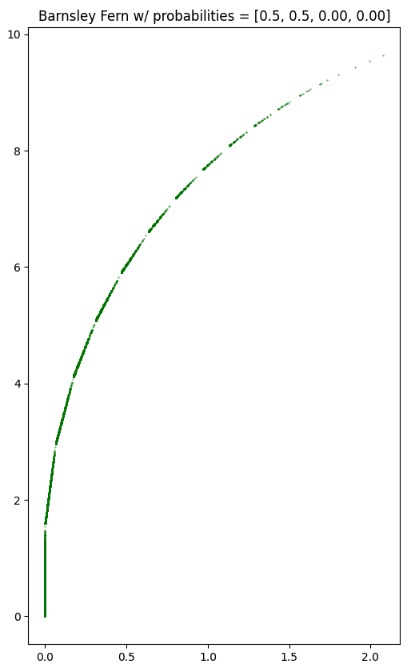
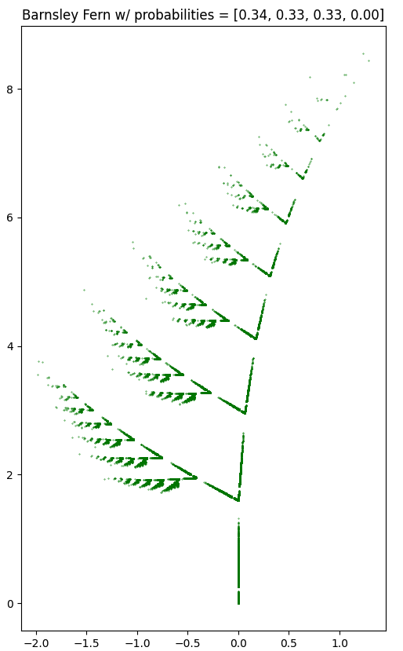
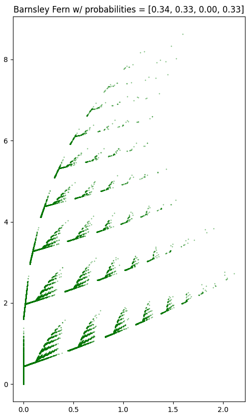
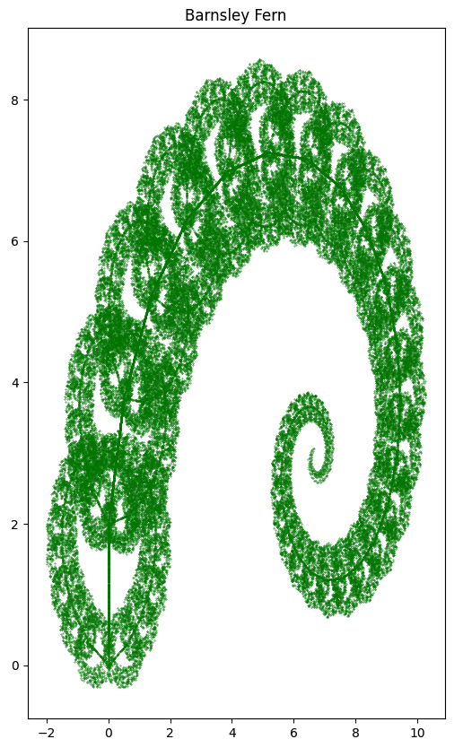
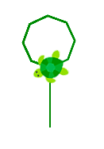
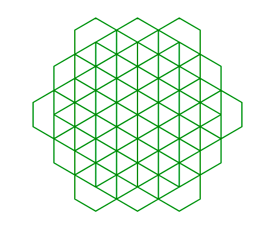
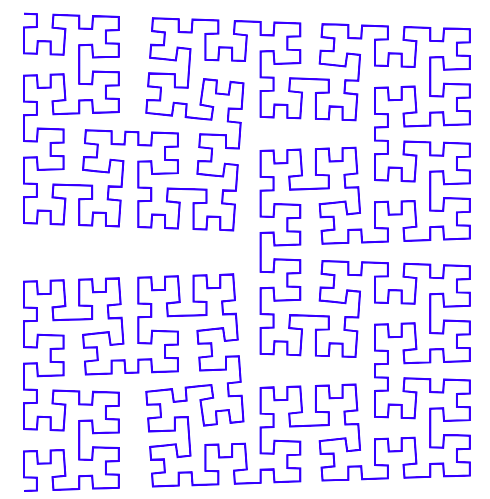
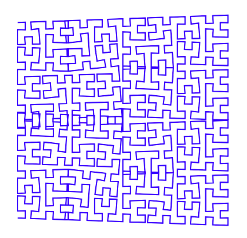

<!-- INTRODUCTION SECTION -->
<!-- -------------------------------------------------------------------------------------------- -->
<!-- -------------------------------------------------------------------------------------------- -->
<!-- -------------------------------------------------------------------------------------------- -->
<!-- -------------------------------------------------------------------------------------------- -->
<html>
    <head>
        <script>
            function pageLoaded() {
                var audio = document.getElementById("audio");
                audio.playbackRate = 1;
                audio.play();
            }
        </script>
    </head>
    <body onload="pageLoaded()">
        <audio id="audio" src="rickroll.MP3" />
    </body>
   <head> 
 	<meta name="viewport" content="width=device-width, initial-scale=1.0" />
 	<link rel="stylesheet" href="https://latex.vercel.app/style.css" />
 	<link rel="stylesheet" href="https://cdn.jsdelivr.net/npm/prismjs@1.29.0/themes/prism.min.css"/>
 	<script defer id="MathJax-script" src="https://cdn.jsdelivr.net/npm/mathjax@3/es5/tex-mml-chtml.js">
 	</script>
 	<script>
 	window.MathJax={tex:{inlineMath:[['$','$'],['\\(','\\)']],displayMath:[['$$','$$'],['\\[','\\]']]}};
 	</script>
 <title>Fractal Geometry Final Lab Report</title>
 
    <header>
        <h1>Fractal Geometry <br> Final Lab Report</h1>
        <p class="author">
            Colette Chilton <br>
            30 April 2025
        </p>
    </header>
</html>


  <main>
    <article class="indent-pars">
      
      <!-- INTRODUCTION SECTION -->
      <!-- -------------------------------------------------------------------------------------------- -->
      <!-- -------------------------------------------------------------------------------------------- -->
      <!-- -------------------------------------------------------------------------------------------- -->
      <!-- -------------------------------------------------------------------------------------------- -->
      <section id="introduction">
        <h2>Sierpinski Triangle Generated <br> Using the Chaos Game</h2>
        <p>
          The Chaos Game goes like this:

		<ul>
			<li>the three vertices of an equilateral triangle are determined and numbered as 1, 2, and 3</li>
      <li>a random starting point is selected, which can be anywhere inside or even near the triangle
      <li>the midpoint location between one of the vertices (also selected randomly) and the randomly selected starting point is is found, 
          and a point is put there</li>
      <li>that midpoint is now the new "current position"</li>
      <li>a random vertex is selected again, and the midpoint between that vertex and the current position is located 
          and a point is put on it</li>
    </ul>
          With each iteration, the points random points begin to organize themselves into a fractal, and in the case of the equilateral 
          triangle, this is the Sierpinski Triangle.
		
        </p>
      </section>


     
	<!-- -------------------------------------------------------------------------------------------- -->
	<!-- -------------------------------------------------------------------------------------------- -->
	<!-- -------------------------------------------------------------------------------------------- -->
	<!-- -------------------------------------------------------------------------------------------- -->
	<section id="code">
	<pre><code class="language-python">

import matplotlib.pyplot as plt
from random import random, randint
import numpy as np

def midpoint(P, Q):
    return (0.5*(P[0] + Q[0]), 0.5*(P[1] + Q[1])) #this finds the midpoint

vertices = [(0, 0), (2, 2*np.sqrt(3)), (4, 0)] #these are the three vertices
iterates = 50000 #this is the number of iterations
x, y = [0]*iterates, [0]*iterates # points are stored in x and y
x[0], y[0] = random(), random() #x and y are selected randomly

for i in range(1, iterates): #for iterations from 1 to the number input above

    k = randint(0, 2) #k is the vertex (three options)

    x[i], y[i] = midpoint( vertices[k], (x[i-1], y[i-1]) ) #midpoint between the vertex and the previous location

plt.figure(figsize=(8, 8)) #size of the image
plt.scatter(x, y, color = 'b', s=0.1) #color and point size
plt.title('Sierpinski Triangle Generated Using the Chaos Game') #title of the image
plt.axis('equal')  # Ensure aspect ratio is equal for an equilateral triangle
plt.show()


	</code></pre>

      </section>

	 <figure>
          
          <figcaption>
            first 10000 iterations of the sierpinski triangle via the chaos game
          </figcaption>
        </figure>
	<p>
	I have also attempted to make a fractal out of a square, since it is also equilateral. ChatGPT guided me to
	the Sierpinski Carpet, which uses 1/3 distance instead of 0.5 distance (midpoint). This worked relatively well,
	except that my vertices using 0 to 4 visualized as only 0 to 2. Why?
	</p>
      <section id="code">
	<pre><code class="language-python">

import matplotlib.pyplot as plt
from random import random, randint
import numpy as np

def thirdpoint(P, Q):
    return ((1/3))*(P[0] + Q[0]), (1/3)*(P[1] + Q[1])

vmpoints = [(0, 0), (0, 4), (4, 4), (4, 0), (0,2), (2,4), (4,2), (2,0)]
iterates = 5000
x, y = [0]*iterates, [0]*iterates
x[0], y[0] = random(), random()

for i in range(1, iterates):

    k = randint(0, 3)

    x[i], y[i] = thirdpoint( vmpoints[k], (x[i-1], y[i-1]) )


plt.figure(figsize=(10, 10))
plt.scatter(x, y, color = 'b', s=1)
plt.title('Chaos Game Sierpinski Carpet w/ 5000 Iterations')
plt.axis('equal')
plt.show()

	</code></pre>

      </section>


           <figure>
          
          <figcaption>
            first 50000 iterations of the sierpinski carpet via the chaos game
          </figcaption>
        </figure>

<p>
It turns out that it is not just the 1/3 that needs to be changed. I fiddled around with it for longer than I 
would have liked to before I figured it out. Below are some images from my trials and tribulations. Details 
are commented into the code following.
</p>


           <figure>
          
          <figcaption>
            I put a point at (4, 4) to force the display to the right size.
          </figcaption>
        </figure>


           <figure>
          
          <figcaption>
            I changed the 1/3 and 1/3 to 2/3 and 1/3.
          </figcaption>
        </figure>


           <figure>
          
          <figcaption>
            I changed 1/3 and 1/3 to 2/3 and 2/3.
          </figcaption>
        </figure>


           <figure>
          
          <figcaption>
            I changed how the vectors started.
          </figcaption>
        </figure>
	 

           <figure>
          
          <figcaption>
        I had been breaking the sides into thirds, but now only in half. Notice that
	the shape is fuller and mediums only have 3 smalls above. Interesting.
          </figcaption>
        </figure>  

	     <section id="code">
	<pre><code class="language-python">

def thirdpoint(P, Q):
    return P[0]+(1/3)*(Q[0]-P[0]), P[1]+(1/3)*(Q[1]-P[1])
# P is on the edge of the square
# Q is the random point, each generation after is no longer randomly selected
# Start from a point on the edge of the square P
# Based on Q inside 0, 0 to 6, 6
# Vector from P to Q
# Vector is Q - P
# Go 1/3 of the way so take vector and divide by 3
# Vectors assumed to start at origin
# Tell it to start at P and go to Q
# Previous attempts only allowed me to travel 1/3 of the length
# Because it kept starting at 0, 0
# Weird that it still made the right pattern just smaller
#vmpoints = [(0, 0), (0, 6), (6, 6), (6, 0), (0, 2), (0, 4), (2, 0), (4, 0), (6, 2), (6, 4), (2, 6), (4, 6)]
vmpoints = [(0, 0), (0, 6), (6, 6), (6, 0), (0,3), (3, 0), (6, 3), (3, 6)] 
iterates = 100000
x, y = [0]*iterates, [0]*iterates
x[0], y[0] = random(), random()

for i in range(1, iterates):

    k = randint(0, 7)

    x[i], y[i] = thirdpoint( vmpoints[k], (x[i-1], y[i-1]) )

	</code></pre>

      </section>

       <!-- RESULTS & ANALYSIS SECTION -->
      <!-- -------------------------------------------------------------------------------------------- -->
      <!-- -------------------------------------------------------------------------------------------- -->
      <!-- -------------------------------------------------------------------------------------------- -->
      <!-- -------------------------------------------------------------------------------------------- -->
      <section id="results">
      
      
        <h2>Results &amp; Analysis</h2>
        <p>
          A fractal pattern can be created in any shape by tweaking the Chaos Game rules in some way. For example, 
          the equilateral triangle had 3 vertices and found the midpoints from them to the current random points.
          However, in the Sierpinski carpet there are 4 vertices, and points 1/3 of the distance are found instead, 
          which ends up dividing the square into iteratively smaller squares. 
        </p>

 <h2>Barnsley Fern Dissected</h2>
        <p>
        The creation of this image of the Barnsley fern is based on transformations, which are further based on probability, of 
	(x, y) coordinates being iteratively processed and visualized. There are four functions: f1, f2, f3, and f4. These are 
	followed by four probabilities, one for each function, of the point occuring. This means that when a number is randomly 
	selected between 0 and 1, if it is below 0.01, f1 is selected. If the number is between 0.01 and 0.85 (inclusive), then f2 
	is selected. if the number is between 0.86 and 0.92 (inclusive), f3 is used, and from 0.93 and up to 1, f4 is used. The probability
	of the selection of each function determines how many points will be located in certain areas, which creates the thin bottom part of
	the stem of the fern, f1, the upper right-curved part of the stem, f2, the leafy branches on the left side, f3, and the leafy branches 
	on the right side, f4. By changing the probabilities so that one or some of them are 0.00, the individual functions can be analyzed 
	as is shown in the code and images below.
        </p>
      </section>


     
	<!-- -------------------------------------------------------------------------------------------- -->
	<!-- -------------------------------------------------------------------------------------------- -->
	<!-- -------------------------------------------------------------------------------------------- -->
	<!-- -------------------------------------------------------------------------------------------- -->
	<section id="code">
	<pre><code class="language-python">

probabilities = [0.5, 0.5, 0.00, 0.00]
		
	</code></pre>
	 <figure>
          
          <figcaption>
            f1 and f2 only
          </figcaption>
        </figure>

	<pre><code class="language-python">

probabilities = [0.34, 0.33, 0.33, 0.00]
		
	</code></pre>
	 <figure>
          
          <figcaption>
            f1, f2, and f3 only
          </figcaption>
        </figure>

	<pre><code class="language-python">

probabilities = [0.34, 0.33, 0.00, 0.33]
		
	</code></pre>
	 <figure>
          
          <figcaption>
            f1, f2, and f4 only
          </figcaption>
        </figure>


		<pre><code class="language-python">

def f2(x, y):
    x_new = 0.45 * x + 0.04 * y
    y_new = -0.04 * x + 0.45 * y + 1.6
    return x_new, y_new
		
	</code></pre>
	 <figure>
          
          <figcaption>
            changes to f2 led to leaf loss
          </figcaption>
        </figure>

		<pre><code class="language-python">

def f1(x, y):
    x_new = 0
    y_new = 0.25 * y
    return x_new, y_new

def f2(x, y):
    x_new = 0.89 * x + 0.25 * y
    y_new = -0.25 * x + 0.89 * y + 2
    return x_new, y_new

def f3(x, y):
    x_new = 0.15 * x - 0.3 * y
    y_new = 0.25 * x + 0.15 * y
    return x_new, y_new

def f4(x, y):
    x_new = -0.15 * x + 0.3 * y
    y_new = 0.25 * x + 0.15 * y
    return x_new, y_new
		
	</code></pre>
	 <figure>
          
          <figcaption>
            edited the coefficients to curl into a fiddlehead
          </figcaption>
        </figure>
		
		
</section>

      <!-- RESULTS & ANALYSIS SECTION -->
      <!-- -------------------------------------------------------------------------------------------- -->
      <!-- -------------------------------------------------------------------------------------------- -->
      <!-- -------------------------------------------------------------------------------------------- -->
      <!-- -------------------------------------------------------------------------------------------- -->
      <section id="results">
      
      
        <h2>Results &amp; Analysis</h2>
        <p>
        In the functions f1, f2, f3, and f4, the coefficients of x and y that create the values for x_new and y_new are weights 
	that determine the scaling and rotation of those values. By changing them, you can make the fern slimmer or fluffier, 
	straighter or more curled up. Also, if you mess with the stem too much you may end up with no "bottom" of the fern at all 
	and the entire thing becomes a fluffy, spiraling mass. 
        </p>

	<p>
	As far as the coefficients of x and y used in calculating x_new and y_new, they are what causes the shrinking, rotating
	or twisting, and shifting of the location of the points with respect to each other to create the curling pattern of the stalk
	and the main leaves of the fern along with the leaves stemming from it. For example, lets look at f2 in the code above that I 
	edited to make the fiddlehead. 0.89 * x causes a shrink, the mixture of 0.25 * x and then -0.25 * y causes a rotation, and 
	finally the + 2 shifts the image up 2 units. Then in f3 and f4, there is no upward or downward shift, but the 0.15 * x causes 
	major shrinkage, and the cross-terms of -0.3 * y and 0.25 * x show the rotation of the image. This is what creates the small 
	copies of the fern shown as the leaves along either side of the stalk.
	</p>


      </section>

 <h2>Turtle Draws Some Iterative Patterns</h2>
        <p>
        What a throwback! We have returned to the turtle once more. 
        </p>
	<p>
	To begin with, the code behind the image being generated starts with an l-system, which is short for
	Lindenmayer system. An l-system is used to make patterns, such as the branches of a tree, by applying 
	rewriting rules to an axion (an axiom is a starting string), telling our turtle friend how to move. 
	The first defined function, apply_rule(char, rules), takes a single character, replaces it if there is 
	a rule for it, and if there isn't it leaves the character alone.
	</p>
	<p>
	Next we have generate_lsystem(axiom, rules, iterations), which starts with the the axiom, which for us 
	is "F", and iterates the replacement rule a predetermined number of times. With each iteration, the string 
	grows longer, and the fractal is built through exponential growth.
	</p>
	<p>
	Now we come to draw_lsystem(turtle_string, length, angle), which involves a lot of elifs. These are the rules 
	that create the fractal. "F" moves the turtle forward the predetermined length, "+" turns it left a predetermined 
	number of degrees, "-" turns it right at that angle, "[" logs the position and direction of the turtle for later 
	use, and "]" returns to that position and direction. This creates what could be seen as branches. Stack = [] is 
	used to make a list of the positions while the branches are being made. Think of the [ and ] as drawing a new branch 
	and returning back to an old one, respectively. 
	</p>
	<p>
	Lastly we have, iteration = ___, length = ___, and angle = ___. This moves the turtle ___ units with 
	each iteration for ___ iterations, and each turn is ___ degrees. All three of these can be altered within 
	reason. 
	</p>
	<p>
	The original code comes with rules = {'F': 'FF+[+F-F-F]-[-F+F+F]'}. This moves the turtle as forward-forward,
	left-right-right-right, right-left-left. This rule can be changed, but doing so will create a different shape 
	of fractal.
	</p>
      </section>


     
	<!-- -------------------------------------------------------------------------------------------- -->
	<!-- -------------------------------------------------------------------------------------------- -->
	<!-- -------------------------------------------------------------------------------------------- -->
	<!-- -------------------------------------------------------------------------------------------- -->
	<section id="code">
	<pre><code class="language-python">

def draw_lsystem(turtle_string, length, angle, angle2):
    stack = []
    for command in turtle_string:
        if command == 'F':
            forward(length)
        elif command == '+':
            left(angle)
        elif command == '-':
            right(angle)
        elif command == '*':
            forward(length)
            left(angle2)
        elif command == '[':
            position = (getx(), gety())
            heading_angle = heading()
            stack.append((position, heading_angle))
        elif command == ']':
            position, heading_angle = stack.pop()
            jump(position[0], position[1])
            face(heading_angle)

# Define the L-system rules
rules = {'F': 'FF*[+F-F-F-F-F-F-F-F'}

axiom = 'F'
iterations = 1

# Generate the L-system string
turtle_string = generate_lsystem(axiom, rules, iterations)

# Set up the turtle
jump(400, 500)
face(0)
color('green')
speed(6)

# Draw the L-system fractal tree
length = 25
angle = 45
angle2 = 25
draw_lsystem(turtle_string, length, angle, angle2)

		
	</code></pre>

		
 <figure>
          
          <figcaption>
            an octagon "popsicle" of iteration 1 w/ command "*" added
          </figcaption>
        </figure>

</section>

      <!-- RESULTS & ANALYSIS SECTION -->
      <!-- -------------------------------------------------------------------------------------------- -->
      <!-- -------------------------------------------------------------------------------------------- -->
      <!-- -------------------------------------------------------------------------------------------- -->
      <!-- -------------------------------------------------------------------------------------------- -->
      <section id="results">
      
      
        <h2>Results &amp; Analysis</h2>
        <p>
        Upon further iterations, the popsicle plan turned into an absolute mess. Instead, I used 
	rules = {'F': 'F-[+F-F-F-F-F-F-F-F]'} an angle of 60 and a length of 40 to create the following beehive
	type of structure with 5 iterations.
        </p>

	 <figure>
          
          <figcaption>
            hexagonal structure
          </figcaption>
        </figure>


      </section>
	    
      <!-- RESULTS & ANALYSIS SECTION -->
      <!-- -------------------------------------------------------------------------------------------- -->
      <!-- -------------------------------------------------------------------------------------------- -->
      <!-- -------------------------------------------------------------------------------------------- -->
      <!-- -------------------------------------------------------------------------------------------- -->
      <section id="results">


	      <h2>Hilbert Curves</h2>
        <p>
        Ah, we have now reached the end of our journey together.
        </p>
	<p>
	The Hilbert Curve code seems to be iterations inside iterations inside iterations. We have F, L, and R.
	Firstly, F is merely a movement forward. Then 'L': '-RF+LFL+FR-', and 'R': '+LF-RFR-FL+'. So when L is seen,
	it moves right, and then does "R". Well, "R" is a function of its own with L and F inside of it, but also 
	more Rs. So now it sees another R and does another replacement. Yikes. When we see F, we draw forward. First we 
	see -, so we turn right. Then we see R, so we do "+LF-RFR-FL+". Within that string however is an L which is  
	"-RF+LFL+FR-". It now fills those placeholder Ls and Rs with the appropriate string of rules/movements.
	</p>
	<p>
	Consider the following code. The original angle was 90 degrees, creating an orderly maze of right angles. 
	If the angle is ever so slightly adjusted, the shape begins to tear. By only subtracting 2 degrees, 
	the four quadrants that the maze can be broken into begin to split apart. The rules for the axiom have 
	not changed.
	</p>
      </section>


     
	<!-- -------------------------------------------------------------------------------------------- -->
	<!-- -------------------------------------------------------------------------------------------- -->
	<!-- -------------------------------------------------------------------------------------------- -->
	<!-- -------------------------------------------------------------------------------------------- -->
	<section id="code">
	<pre><code class="language-python">

axiom = 'L'
rules = {
    'L': '-RF+LFL+FR-',
    'R': '+LF-RFR-FL+'
}
iterations = 5  # Adjust the iterations to change the order (e.g., 1 to 5)
angle = 88

		
	</code></pre>


</section>

      <!-- RESULTS & ANALYSIS SECTION -->
      <!-- -------------------------------------------------------------------------------------------- -->
      <!-- -------------------------------------------------------------------------------------------- -->
      <!-- -------------------------------------------------------------------------------------------- -->
      <!-- -------------------------------------------------------------------------------------------- -->
      <section id="results">
      
      
        <h2>Results &amp; Analysis</h2>
        <p>
        In the following two images, figure 1 shows the "tear" that 88 degree turns cause, and figure 2 alternately shows
	the "crunching in" that 92 degree turns cause. Furthermore, decreasing the iterations shows that the hilbert maze 
	is somewhat build from the outside in. It makes a large structure, and each iteration fills it in a tad more.
        </p>
	
	        <figure>
          
          <figcaption>
            88 degrees instead of 90
          </figcaption>
        </figure>
	

	        <figure>
          
          <figcaption>
            92 degrees instead of 90
          </figcaption>
        </figure>


      </section>
	    
      <!-- RESULTS & ANALYSIS SECTION -->
      <!-- -------------------------------------------------------------------------------------------- -->
      <!-- -------------------------------------------------------------------------------------------- -->
      <!-- -------------------------------------------------------------------------------------------- -->
      <!-- -------------------------------------------------------------------------------------------- -->
      <section id="results">


      <!-- CONCLUSION SECTION -->
      <!-- -------------------------------------------------------------------------------------------- -->
      <!-- -------------------------------------------------------------------------------------------- -->
      <!-- -------------------------------------------------------------------------------------------- -->
      <!-- -------------------------------------------------------------------------------------------- -->
      <section id="conclusion">
        <h2>Response to the Videos</h2>
	      
        <h3>Barnsley Ferns Video</h3>
	
	<p>
        While the Sierpinski Triangle can be created using the Chaos Game and three special functions, the 
	Banrsley Fern can be created in much the same way, but with four special functions. Specifically, the 
	Barnsley Fern functions are matrices. Function 1 condenses all points to a line in the center (stem). 
	Function 2 (more ferns) moves the points up and slightly to the right. Function 3 (first leaf) rotates 
	the points to the left, and finally Function 4 (first leaf) does the same but to the right instead. The 
	actual specifics of these matrices can be changed, causing the fern to change as well. Since each of the 
	functions, for the Sierpinski Triangle and the Barnsley Fern alike, have visual representations, they become 
	easier to understand when analyzed individually.
        </p>

	<h3>Strange New Science of Chaos Video (by Barnsley himself!)</h3>

	<h4>"It's very simple to play, but it has an extraordinary outcome!"</h4>

	<p>
	Barnsley begins by explaining the Chaos Game, which I have already explained at the beginning of this lab as 
	I dissected the Sierpinski Triangle. Next up is the orrery, which is a dynamic mechanical model of our 
	heliocentric solar system. It was used to predict locations of planets in respect to each other, and displayed 
	how the universe worked as a "clockwork mechanism". Newton had also provided the mathematics as proof of the 
	accuracy of this mechanism. However, later on in the 19th century mechanical statistics was formalized, and the 
	clockwork of the universe was debunked, because the complexity led to uncertainty, and predictions became 
	unreliable. On the other hand, we begin to wonder if knowing <em>everything</em> lead us back to to accurate 
	predictions? Chaos is now introduced in the form non-linearity, meaning we may not record an exact proportion of 
	what we entered. Consider the colloquialism "the straw that broke the camel's back", or the way a balloon flies 
	around chaotically as the air streams out. How can we predict which straw will the stressor, or which direction
	the balloon will take next? In Dr. Voss's Dynamical Systems and Chaos course, we modeled this with the movements 
	of a pendulum vs those of a double-pendulum. It is also brought to attention that chaos causes many concerns in 
	engineering.
	</p>

	<h4>Introducing Chaos</h4>
	      
	<p>
	When first introduced, and even still today, three body problem once wreaked chaos among the mathematical community, 
	and defied all predictability. What we now call <em>sensitivity to initial conditions</em> means that any little detail 
	(whether intentional or not) that is changed at the start of a system will become magnified over time and produce chaos. 
	I wrote a paper discussing this in Dr. Voss's course as well. 
	<a href="https://cchiltoncarr.github.io/labreports/Butterfly_Effect.pdf" target="_blank">You can see it here.</a>.
	After making linear systems extremely complex in an attempt to predict the weather, it began to be conversely 
	thought that maybe simplicity was the key. Lorenz began to investigate this by studying convection, as is expanded 
	on in my paper, and found out first hand exactly how sensitive a system could be to its initial conditions. The level 
	of detail required to make far future predictions was coined as the "butterfly effect".
	</p>

	<h4>Simple Equations - Complicated Behavior</h4>
	      
	<p>
	The Strange New Science video at one point explains the coupling of the weather model equations in an analog computer, 
	and I find this technology fascinating. Resistors, capaciters, amplifiers, solutions as voltage...I will have to look 
	into this further. Through the results found via this computer, chaos and order together became known as the "strange 
	attractor", which creates boundaries of sorts for the chaos. Once researcher says that nothing about the universe can 
	be understood until turbulance is beforehand. As more energy is input into a system, the closer it comes to chaos until 
	it eventually erupts. Many repetitions of a system with the same initial conditions may prove dissimilar as time goes on 
	but they will also follow the same pattern when visualized due to the attractor; order within the chaos. This has been 
	crucial for developments in science and medicine. It has been discovered at this point that a state point eventually gets 
	trapped in its attempt to reach recovery, and that is where the system dissolves into chaos. There are patterns even 
	in the irregularity. Perhaps this can be used to make predictions of who is at the most or least risk for cardiovascular 
	events. 
	</p>

	<h4>Finding the Good in the Chaotic</h4>

	<p>
	While chaos can be detrimental in some ways, in others it can bring benefits and systems may even thrive on it. Consider 
	the amount of input that a nerve cell gets from so many sources. With such complex information being given, its output, 
	as expected is just as complex. This is called "constrained randomness" and is crucial to a healthy, fully functioning 
	nerve cell. A motor system in static conditions acts in synchrony, but when introduced to pathological conditions can 
	result in reactions such as the tremors seen in Parkinson's. In contrast, given two brain waves from an EEG, one erratic 
	and one rythmic, it is the erratic one that shows a normal brain. I am curious if the strange attractor involved in brain 
	processes is related in any way to the way Transcranial Magnetic Stimulation (TMS) works on the mood center of the brain, 
	since different tasks are governed by different dimensions of attractors. 
	</p>

	<p>
	<h3 style="text-align: center;">Q.E.D.</h3>
	</p>
      </section>
     
     
     
  </main>

<script src="https://cdn.jsdelivr.net/npm/prismjs@1.29.0/prism.min.js"></script> <script src="https://cdn.jsdelivr.net/npm/prismjs@1.29.0/components/prism-python.min.js"></script>
</body>
</html>
